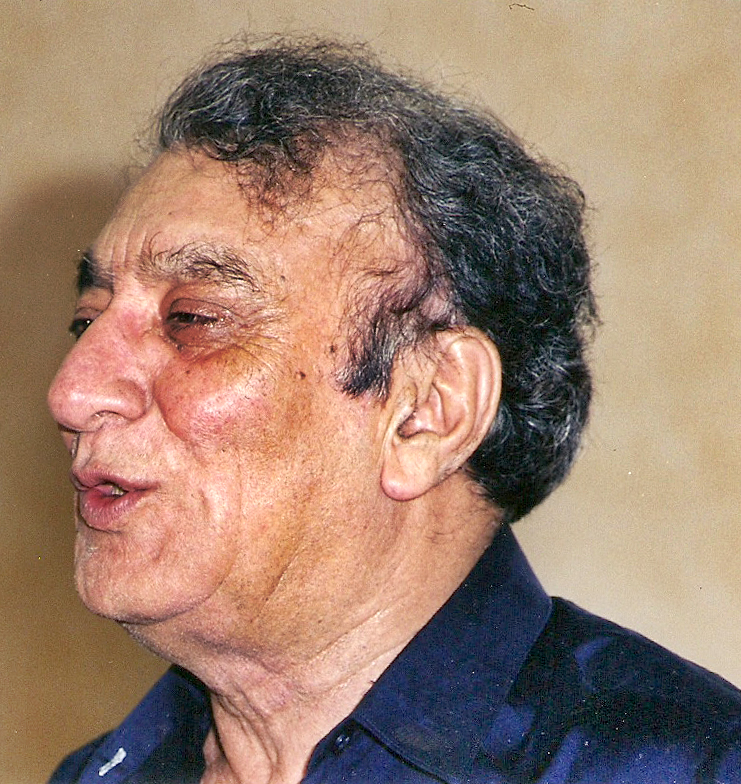

"If we have only one that can govern, and we chose him... does that mean we're not democratic?"
Ahmed Faraz
"All people hope Islam helps everything in life. Islam will make jobs. Islam will make freedom. Islam will make everything."
Ahmed Faraz
"If we have only one that can govern, and we chose him... does that mean we're not democratic?"
Ahmed Faraz
"All people hope Islam helps everything in life. Islam will make jobs. Islam will make freedom. Islam will make everything."
Ahmed Faraz
"If we have only one that can govern, and we chose him... does that mean we're not democratic?"
Ahmed Faraz
"All people hope Islam helps everything in life. Islam will make jobs. Islam will make freedom. Islam will make everything."
"If we have only one that can govern, and we chose him... does that mean we're not democratic?"
Ahmed Faraz
"All people hope Islam helps everything in life. Islam will make jobs. Islam will make freedom. Islam will make everything."
Ahmed Faraz
"If we have only one that can govern, and we chose him... does that mean we're not democratic?"

Books
Biography
Early Life
Ahmed Faraz has born Syed Ahmed Shah on 12 January 1931 in Kohat. 'Faraz' is his pen name.
he is a son of Syed Muhammad Shah Bark.His brother is Masood Kausar, an ex Governor of Khyber Pakhtunkhwa, Pakistan. Faraz had earlier moved to Peshawar from Kohat District with his family. He studied at Edwardes College, Peshawar and received his Master's degree in Urdu and Persian from Peshawar University.During his college life, the two poets Faiz Ahmad Faiz and Ali Sardar Jafri influenced him and became Faraz's role models.
Political Career
Ahmed Faraz was a visionary person and never hesitated in expressing his views and opinions.
This outspoken nature of Faraz caused him quite of troubles in life. He admired Zulfiqar Ali Bhutto very much as a politician. He was very much active during the student and labor movement held during the 1960s. He was not much fond of military rule. He felt heartbroken for the atrocities that the people of East Pakistan faced at the hands of Pakistani military. He dared to call the Pakistan Army as “professional killers” due to their brutalities in East Pakistan. Even in his poems and writings he severely criticized military regime for this reason, during a mushaira held while Zia-ul-Haq was in power. As a result, Ahmed Faraz was arrested. After this incident he left Pakistan and moved to Europe and Canada. After six years he returned to Pakistan. Even during the regime of General Parvez Musharraf he issued statements regarding the former dictator’s policies in Baluchistan that made the dictator cross. As a result the government drove out the poet and his family from their home in the capital city of Islamabad. Their belongings were thrown onto the road. In the year of 2007, Prime Minister Shaukat Aziz removed the poet from the post that he occupied as the chairman of the National Book Council. In 2006 he even returned his Hilal-e-Imtiaz which was awarded to him in 2004.
Poetic Style
There is progressive and vast outlook
in his voice. Apart from Ghazal the dominant form of Urdu poetry, Faraz wrote beautiful nazms, but his ghazals are well-known and prominent. Love is among the dominant themes of Urdu ghazals and so is in the Faraz’s poetry.
Major Works
Some of his notable poetry collections include "Tanha Tanha," "Dard-e-Ashob," and "Nayaft."
His ghazals and nazms (poems) gained immense popularity for their emotional depth and lyrical beauty.
"Ranjish Hi Sahi" is one of his most famous ghazals, which has been sung by various artists.
Influence on Poetry
Faraz's work has inspired generations of poets and remains a source of inspiration for Urdu literature enthusiasts.
His ability to blend classical and modern themes in his poetry has earned him a lasting place in the literary world.
Ahmed Faraz's poetry transcends time and continues to resonate with readers, making him a revered figure in Urdu literature.
Exile and Return
During the military regime of General Zia-ul-Haq in the late 1970s, Faraz went into self-imposed exile in the United Kingdom due to his outspoken views against the government.
He returned to Pakistan in 1988 after the end of the Zia era.
During the military regime of General Zia-ul-Haq in the late 1970s, Faraz went into self-imposed exile in the United Kingdom due to his outspoken views against the government.
He returned to Pakistan in 1988 after the end of the Zia era.
End Of an Era
Ahmed Faraz died on this day in 2008, due to kidney failure and was buried in Islamabad. Ahmed Faraz's death marked the "End of an Era" in the sense that it signified the departure of a literary giant who had significantly shaped the landscape of Urdu poetry.
His contributions, both in terms of literary innovation and his commitment to social issues, left an enduring legacy in the world of Urdu literature, making him an iconic figure in the history of Urdu poetry.
Impact on Urdu Poetry
Ahmed Faraz is regarded as one of the leading poets of the Progressive Writers' Movement in Pakistan.
His poetry often addressed issues like social justice, love, and human emotions.
He played a pivotal role in shaping modern Urdu poetry.
justice, love, and human emotions.
He played a pivotal role in shaping modern Urdu poetry.
Honours
Hall Of Fame
Ahmad Faraz was first awarded the Sitara-i-Imtiaz by the Government of Pakistan
Ahmad Faraz was awarded the Hilal-e-Imtiaz in 2004 by the then President of Pakistan Pervez Musharraf.
Ahmad Faraz returned this award two years later in 2006
.jpeg)
.jpeg)
.jpeg)
.jpeg)

.jpeg)
.jpeg)
.jpeg)
.jpeg)
.jpeg)